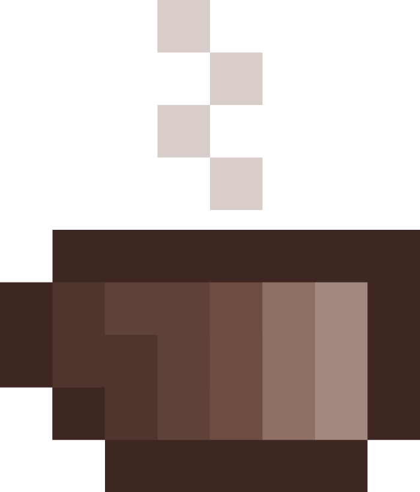

<html ng-app="ionicApp">

	<head>
		<meta charset="utf-8">
		<meta name="viewport" content="initial-scale=1, maximum-scale=1, user-scalable=no, width=device-width">
		<title></title>

		<link href="lib/ionic/css/ionic.css" rel="stylesheet">
		<link href="css/style.css" rel="stylesheet">

		<!-- IF using Sass (run gulp sass first), then uncomment below and remove the CSS includes above
<link href="css/ionic.app.css" rel="stylesheet">
-->

		<!-- ionic/angularjs js -->
		<script src="lib/ionic/js/ionic.bundle.js"></script>

		<!-- cordova script (this will be a 404 during development) -->
		<script src="cordova.js"></script>

		<!-- your app's js -->
		<script src="js/jquery-2.1.4.min.js"></script>
		<script src="js/format.js"></script>
		<script src="js/app.js"></script>
		<script src="js/doesStuff.js"></script>
	</head>

	<body>

		<ion-nav-bar class="bar">
			<ion-nav-back-button class="button-icon ion-arrow-left-c">
			</ion-nav-back-button>
		</ion-nav-bar>

		<ion-nav-view></ion-nav-view>


		<script id="templates/tabs.html" type="text/ng-template">
			<ion-tabs class="tabs-icon-top">

				<ion-tab title="Home" icon="ion-star" href="#/tab/home">
					<ion-nav-view name="home-tab"></ion-nav-view>
				</ion-tab>

				<ion-tab title="Analytics" icon="ion-stats-bars" ui-sref="tabs.analytics">
					<ion-nav-view name="analytics-tab"></ion-nav-view>
				</ion-tab>

			</ion-tabs>
		</script>

		<script id="templates/home.html" type="text/ng-template">
			<ion-view view-title="Home">
				<ion-content class="padding" ng-controller="homeCtrl">
					
					<div class="card">
						<div class="item item-text-wrap">
							{{alert.displayStatus}}
						</div>
					</div>
				</ion-content>
			</ion-view>
		</script>

		<script id="templates/nav-stack.html" type="text/ng-template">
			<ion-view view-title="Tab Nav Stack">
				<ion-content class="padding">
					<p></p>
				</ion-content>
			</ion-view>
		</script>

		<script id="templates/analytics.html" type="text/ng-template">
			<ion-view title="Analytics">
				<ion-content>
					<div class="list card">

					</div>
				</ion-content>
			</ion-view>
		</script>

	</body>

</html>
